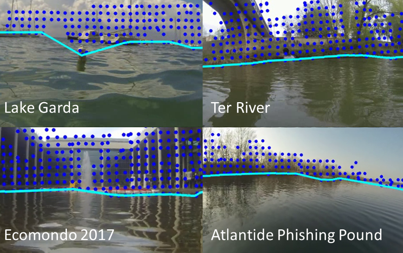

Unsupervised Waterline Detection for Low-cost Autonomous Boats
Authors: Andrea Cracco, Domenico D. Bloisi, and Alessandro Farinelli
Waterline detection in images captured from a moving camera mounted on an autonomous boat is a complex task, due the presence of reflections, illumination changes, camera jitter, and waves. Localizing the position of water pixels in the camera view is the foundation for building a collision avoidance system that relies on visual data only.
We are developing an unsupervised method for waterline detection, which can be used for low-cost autonomous boats.
